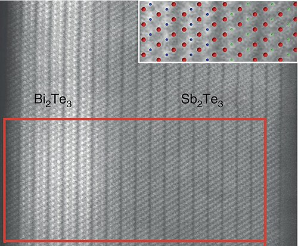

Nome químico: Telureto de antimônio
Nome usual: Antimony telluride (em inglês)
Sb2Te3
Formado por dois átomos de antimônio (Sb) e três átomos de telúrio (Te), ligados covalentemente em camadas cristalinas hexagonais. Cada Sb compartilha elétrons com Te, resultando em uma estrutura estável.
Covalente
Estrutura em camadas hexagonais, cristal trigonal-rômbico.
Estudos sobre Sb2Te3 começaram no século XX, impulsionados pela pesquisa em semicondutores e o efeito Seebeck (conversão de calor em eletricidade). Desde então, é foco de estudos em eletrônica quântica.
É produzido sinteticamente em laboratório pela reação de antimônio com telúrio em altas temperaturas ou por técnicas de deposição química em vapor (CVD). Não ocorre naturalmente em estado puro, mas pode estar presente em minerais teluretos.
Qual a fórmula química do telureto de antimônio?
O telureto de antimônio é usado principalmente em:
O telureto de antimônio também é estudado por suas propriedades em:
Isolantes topológicos